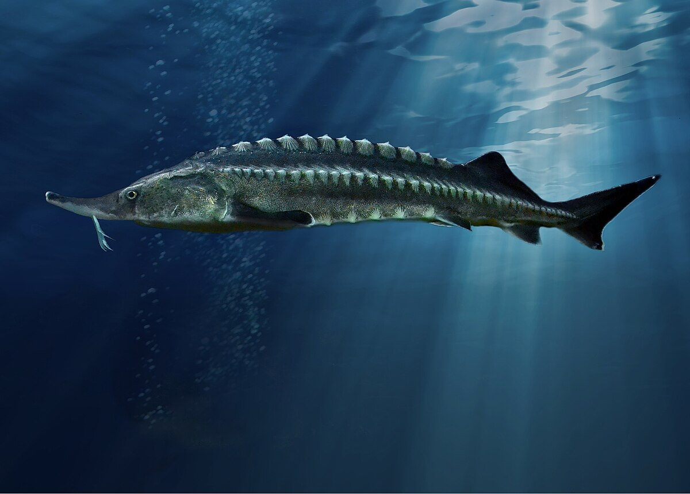
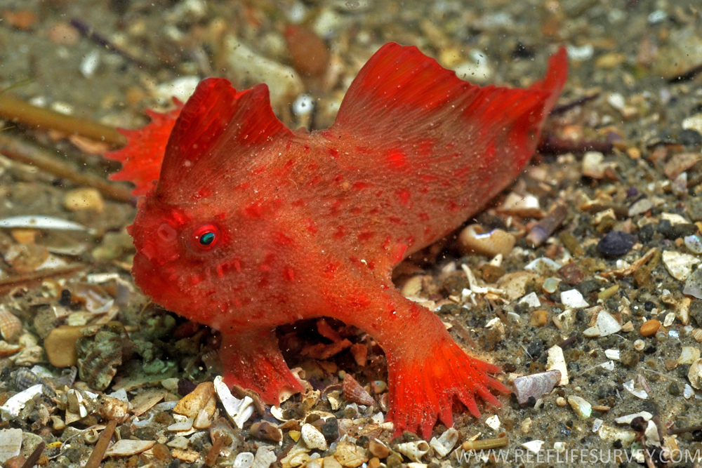
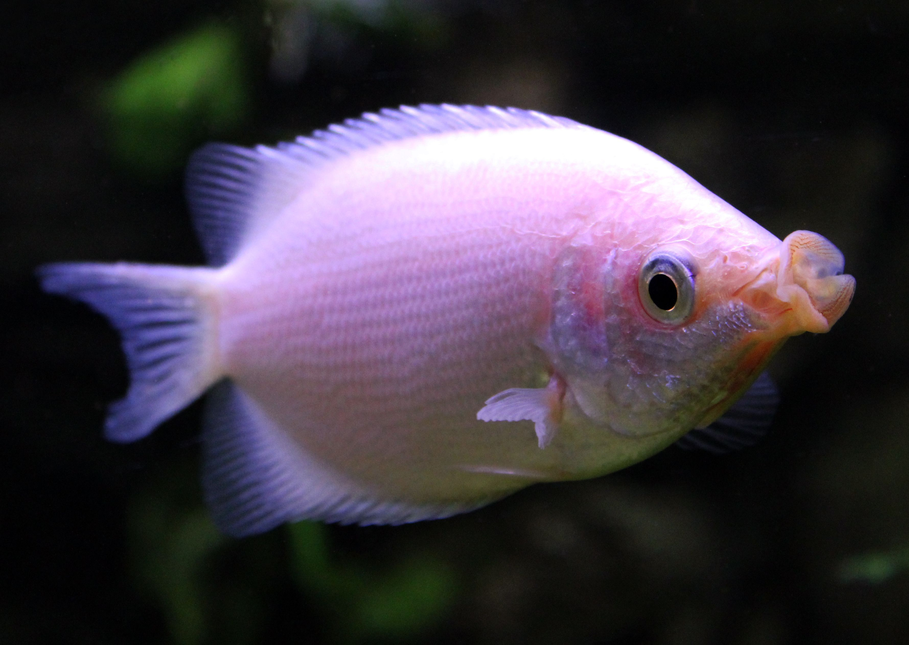
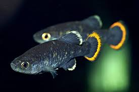
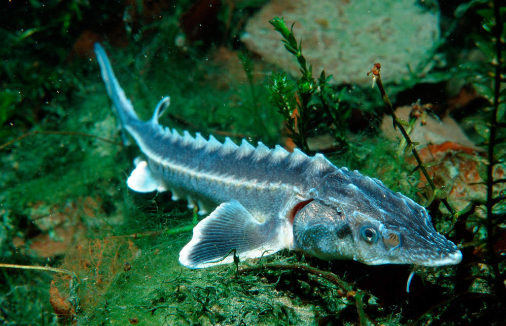
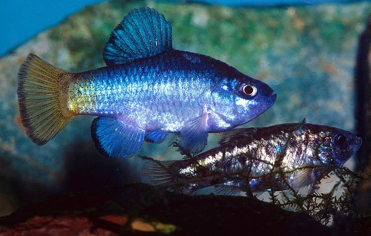
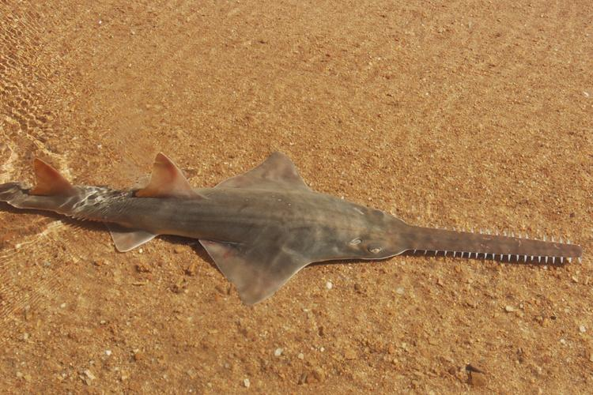

European Sea Sturgeon
The European Sea Sturgeon, also known as the Atlantic Sturgeon (not to be confused with the other Atlantic Sturgeon or Acipenser oxyrinchus oxyrinchus), is a rarest fish Species that can only be found in France’s Garonne River. Historically, the European Sea Sturgeon ranged from the North and Baltic Seas, the English Channel, the European Atlantic coastlines, the northern Mediterranean west of Rhodos, and the western and southern Black Sea.
Read More
Red Handfish
The Red Handfish is a strange-looking fish that moves over the ocean floor using its hand-like fins. The Red Handfish, which was found in the 1800s, has always had a modest population size. Until early 2018, only around 20 – 40 Red Handfish were reported to be residing in Hobart’s Frederick Henry Bay, off the coast of eastern Tasmania.
Read More
Kissing Loach
The Kissing Loach, or Aymodoki in Japanese, is found in just three tiny and isolated places of Japan. The only reason the Kissing Loach hasn’t become extinct is due to substantial human involvement and conservation efforts. According to the IUCN Red List, the Kissing Loach is on the verge of becoming extinct in the wild, however it is now classed as a critically endangered species.
Read More
Giant Sea Bass
The Giant Sea Bass was formerly a plentiful fish along the coasts of California and Baja, Mexico, but it has been nearly wiped off in recent decades. The Giant Sea Bass is thought to be making a return because of robust conservation efforts. However, its current wild population is believed to be around 500 adult individuals. The Giant Sea Bass, as the name indicates, is a gigantic fish that may grow to be about 600 lbs (272.16 kg) in size.
Read More
Tequila Splitfin
Tequila Splitfin is a tiny fish found only in Rio Teuchitlan, Mexico, in a small spring pool. Scientists assumed the Tequila Splitfin had become extinct since no specimens have been found since 1992. The only known remnant colony of Tequila Splitfins, however, was discovered in 2005. It is thought that there are only around 500 Tequila Splitfins left in the wild, with about 50 mature fish.
Read More
Adriatic Sturgeon
Despite the fact that this list and our study demonstrate otherwise, the Devils Hole Pupfish is usually regarded as the world’s rarest fish (it is not quite as rare as the Red Handfish). The Devils Hole Pupfish can only be found in the Devils Hole, a geological structure in Nevada’s Death Valley National Park. The Devils Hole Pupfish is thought to have been isolated in this location between 10,000 and 20,000 years ago.
Read More
Devils Hole Pupfish
Despite the fact that this list and our study demonstrate otherwise, the Devils Hole Pupfish is usually regarded as the world’s rarest fish (it is not quite as rare as the Red Handfish). The Devils Hole Pupfish can only be found in the Devils Hole, a geological structure in Nevada’s Death Valley National Park. The Devils Hole Pupfish is thought to have been isolated in this location between 10,000 and 20,000 years ago.
Read More
Smalltooth Sawfish
The Smalltooth Sawfish has an unusual appearance and derives its name from its long blade-like snout. Despite its appearance, the Smalltooth Sawfish is connected to rays, which are cartilaginous fish. Historically, the Smalltooth Sawfish was much more common in tropical and subtropical areas of the western and eastern Atlantic Oceans. Today, the Smalltooth Sawfish can only be found off the coast of Florida and around several Bahamas islands.
Read More